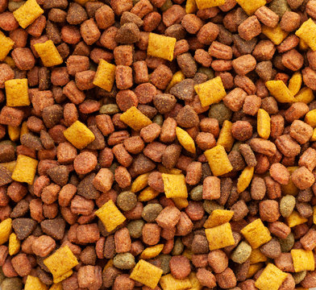
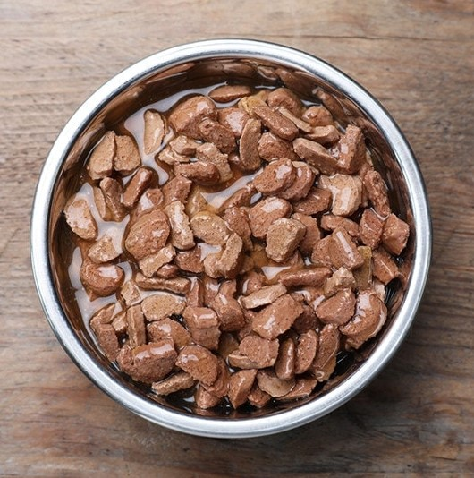
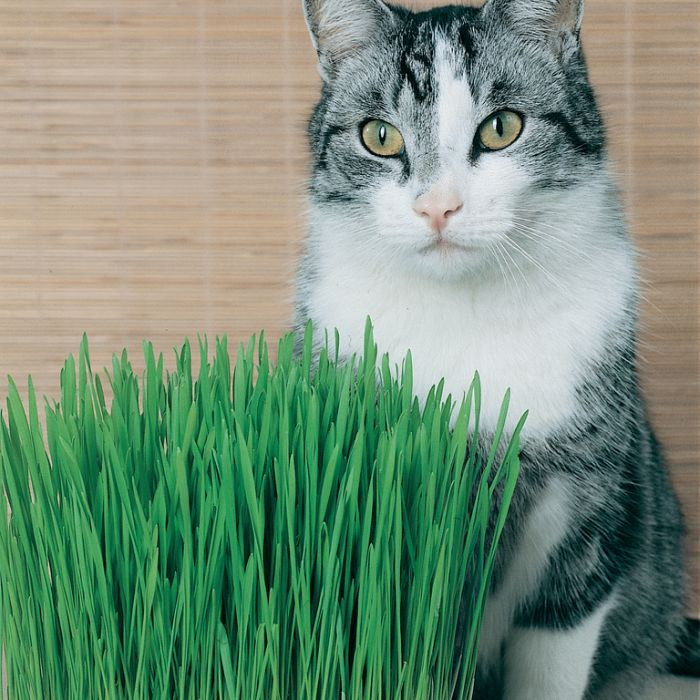
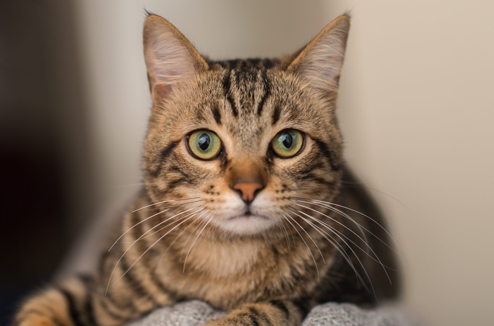

Learn about different cat breeds and their characteristics.
Playful Nature Cats are known for their playful and curious nature. They engage in various activities to keep themselves entertained, from chasing laser pointers to pouncing on feather toys. This playfulness not only provides physical exercise but also stimulates their mental agility. Cat owners often find joy in witnessing their feline friends engaging in playful antics, showcasing the innate curiosity that is characteristic of cats.
Grooming Rituals Cats are meticulous groomers, spending a significant part of their day cleaning their fur. With their rough tongues, they meticulously lick themselves, removing loose fur and dirt. This grooming ritual not only keeps them clean but also helps distribute natural oils across their coat, promoting a healthy and shiny appearance. Cats may also groom each other as a form of social bonding, reinforcing their strong connections within a multi-cat household.
| 
Dry Food |

Wet Food |

Cat Grass |
Dry Food Dry cat food is a convenient and nutritionally balanced option for feline diets. Packed with essential nutrients, it promotes dental health by reducing plaque buildup. Its crunchy texture helps maintain healthy teeth and gums, making it a practical choice for cat owners concerned about their pet's oral hygiene.
Wet Food Wet cat food provides vital hydration and supports urinary tract health. With high water content, it aids in preventing dehydration, especially in cats that may not drink enough water. The moisture-rich texture is palatable and beneficial for cats with dental issues, offering a tasty and nourishing alternative for feline companions.
Cat Grass Cat grass serves as a natural source of fiber, aiding in digestion and reducing hairballs. Rich in vitamins and minerals, it supports overall well-being. Introducing cat grass to your feline friend's environment can also fulfill their natural instinct to chew on greens, promoting mental stimulation and a healthy lifestyle for first-time cat owners.
3...
2...
1...
More to come...